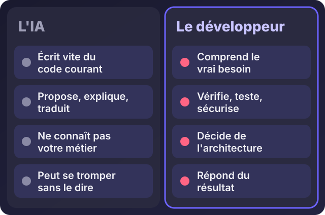
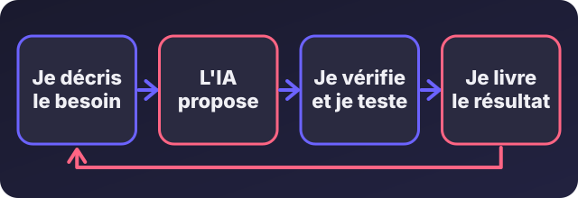

Les développeurs vont-ils disparaître à cause de l'intelligence artificielle ?

Écouter cet article · environ 6 min
Vous avez sûrement vu les vidéos : une phrase écrite à l'IA, et en quelques secondes, une application complète apparaît à l'écran. La question vient alors toute seule, chez les étudiants, chez les parents, chez les chefs d'entreprise : à quoi bon payer un développeur, s'il suffit de demander à une machine ?
Je suis développeur, et j'utilise l'IA tous les jours : Claude, ChatGPT, GitHub Copilot. Je ne vais donc ni vous rassurer par réflexe, ni vous faire peur. Voici ce que je constate sur le terrain.
La réponse courte
Non, les développeurs ne vont pas disparaître. Mais le métier est en train de changer, et certaines façons de le faire vont disparaître.
L'IA ne remplace pas un développeur : elle remplace certaines tâches d'un développeur. Ce n'est pas la même chose. Un comptable n'a pas disparu quand le tableur est arrivé. Ce qui a disparu, c'est le calcul à la main. Le métier est devenu plus tourné vers l'analyse et le conseil.
Ce que l'IA fait très bien
- Écrire du code courant : un formulaire, une page, une requête de base de données, une fonction qu'on a déjà vue cent fois.
- Expliquer un bout de code que l'on ne comprend pas, ou le traduire dans un autre langage.
- Proposer un premier jet très vite, pour qu'on ait quelque chose à corriger au lieu d'une page blanche.
- Détecter des erreurs évidentes et suggérer une correction.
Sur ces points, elle va plus vite que moi, et je ne m'en prive pas. C'est pour cela que j'arrive à livrer plus vite qu'avant.
Ce qu'elle ne fait pas

- Elle ne connaît pas votre métier. Elle ne sait pas que chez vous, un client paie à la livraison, qu'un coursier n'a pas toujours de réseau, ou qu'une facture se valide en deux étapes. Ces détails font la différence entre un outil utilisé et un outil abandonné.
- Elle ne sait pas ce qu'il faut construire. Elle répond à la demande qu'on lui fait. Si la demande est mauvaise, elle produit très bien quelque chose de mauvais. Comprendre le vrai besoin, c'est le travail de départ d'un développeur.
- Elle se trompe, et sans le dire. Un code généré peut marcher dans le test et casser en vrai, ou contenir une faille de sécurité qu'on ne voit pas. Quelqu'un doit relire, tester, et répondre du résultat.
- Elle ne porte pas la responsabilité. Quand les données de vos clients sont exposées, personne ne va demander des comptes à un robot.
- Elle ne s'occupe pas de l'après. Un logiciel doit être installé, sauvegardé, corrigé, mis à jour, expliqué aux utilisateurs. Un outil sans suivi finit par s'arrêter.
Ma façon de travailler avec l'IA
Je ne lui confie pas un projet. Je travaille en boucle :

- Je décris le besoin avec précision. C'est la partie qui demande de comprendre le métier du client.
- L'IA propose une solution ou un morceau de code.
- Je vérifie et je teste. Je lis ce qui a été produit, je le fais tourner dans des cas réels, je cherche ce qui peut casser.
- Je livre, et je reste responsable de ce qui part en production.
Sans la deuxième étape, on va vite. Sans la troisième, on va vite dans le mur. C'est pour cela que, dans mon travail, j'utilise l'IA pour accélérer, mais en sécurisant le code généré : relire, tester, corriger.
Ce qui change vraiment pour les développeurs
- Le code simple perd de la valeur. Si votre seule compétence est d'écrire des pages basiques à partir d'un modèle, la concurrence est maintenant une machine gratuite.
- La compréhension prend de la valeur. Savoir ce qu'on construit, pourquoi, et comment s'en servir, devient ce qui distingue un bon développeur.
- Les bases comptent plus qu'avant. Pour juger ce que l'IA propose, il faut comprendre ce qu'elle écrit. Celui qui ne comprend rien ne peut pas la contrôler.
- Le métier se rapproche de l'entreprise. Parler avec les gens, comprendre un flux de travail, choisir ce qui vaut la peine d'être automatisé : c'est de moins en moins de la frappe et de plus en plus du conseil.
Ce que cela change pour un chef d'entreprise
La bonne nouvelle : construire un outil coûte moins de temps qu'avant, et un bon prestataire peut vous livrer plus vite. La mauvaise : il est aussi plus facile de livrer vite quelque chose de fragile.
Quand vous choisissez qui va construire votre site, votre application ou votre automatisation, posez ces questions :
- Comment utilisez-vous l'IA dans votre travail ?
- Qui relit et teste ce qu'elle produit ?
- Que se passe-t-il si quelque chose casse dans six mois ?
- Qui a les accès, et où sont mes données ?
Un prestataire qui sait répondre simplement à ces quatre questions est un bon signe.
Et si vous voulez devenir développeur ?
Ne vous découragez pas, mais changez de méthode.
- Apprenez les bases pour de vrai : HTML, CSS, JavaScript, une base de données. Ce sont elles qui vous permettent de juger le travail de l'IA.
- Utilisez l'IA comme un professeur patient, pas comme un tricheur. Demandez-lui d'expliquer ce qu'elle a écrit, jusqu'à ce que vous le compreniez.
- Construisez des projets réels, pour des gens réels, avec de vrais problèmes. Aucune IA ne vous remplacera sur le terrain où vous avez fait vos preuves.
- Apprenez un métier à côté du code : la gestion, la logistique, la santé, le commerce. Un développeur qui comprend un secteur vaut beaucoup plus.
En résumé
L'IA est un outil puissant qui change la façon de faire le métier, comme l'imprimante, le tableur ou Internet l'ont fait pour d'autres. Les développeurs qui refusent de l'utiliser prendront du retard. Ceux qui l'utilisent sans comprendre prendront des risques. Ceux qui l'utilisent en comprenant, en vérifiant et en répondant du résultat auront plus de travail, pas moins.